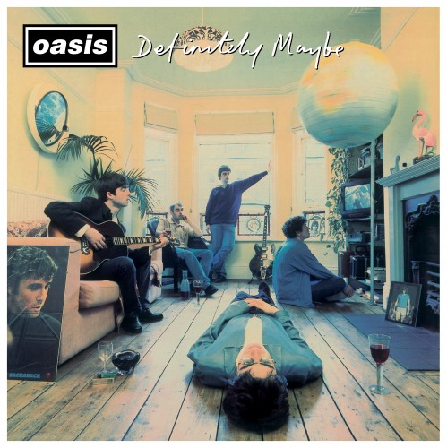
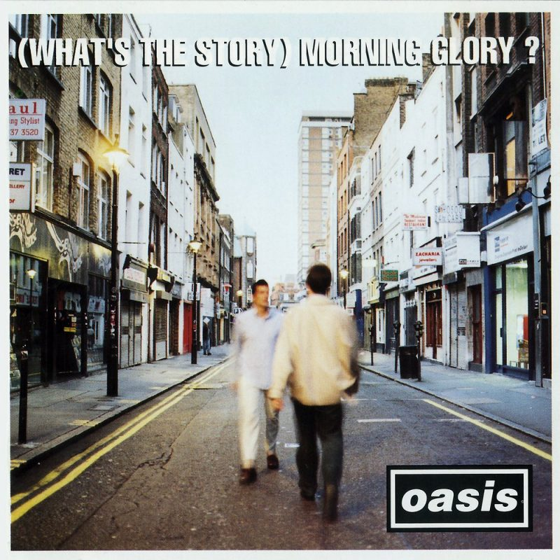
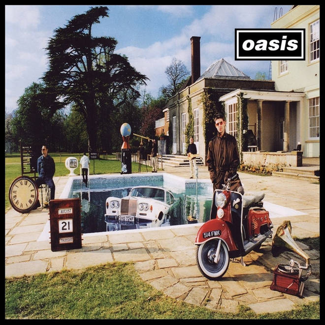
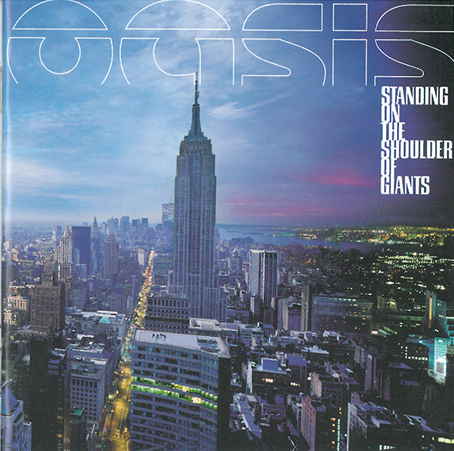
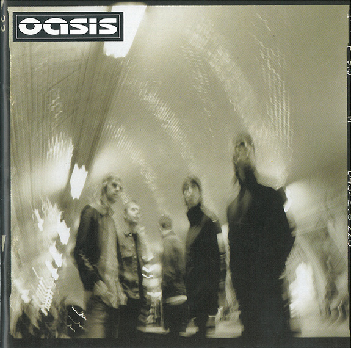
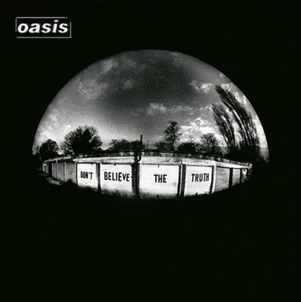
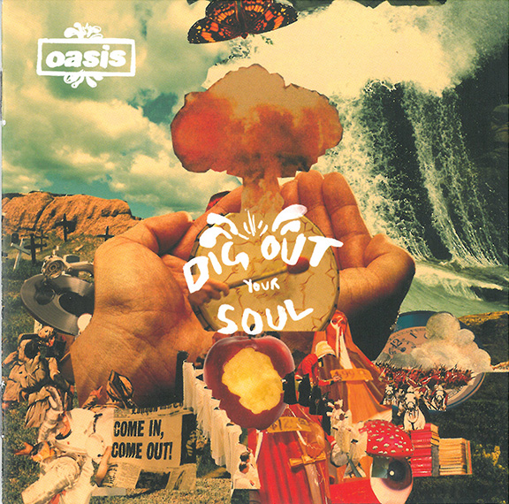

The most iconic albums from the Britpop legends.

Definitely Maybe was Oasis's debut album and became the fastest-selling debut album in British music history. The album helped launch the Britpop movement of the 1990s.

This album made Oasis internationally famous and includes their biggest hits such as Wonderwall and Don't Look Back in Anger. It became one of the best-selling albums in UK music history.

Be Here Now became one of the fastest-selling albums in UK chart history and was highly anticipated following the success of Morning Glory.

This album introduced a darker and more experimental sound for Oasis. It was also the first album released under their own label, Big Brother Recordings.

The album includes popular Oasis songs such as "The Hindu Times" and "Stop Crying Your Heart Out". It marked a return to a more classic Oasis sound.

This album became one of Oasis's most successful releases in the 2000s and features songs like "Lyla" and "The Importance of Being Idle".

Dig Out Your Soul is the final studio album released by Oasis. The album features a psychedelic rock influence and includes "The Shock of the Lightning".